Mon approche graphique est centrée sur une sensibilité à la typographie et à l'édition. L'expérimentation et la recherche sont des aspects essentiels dans mon processus créatif.
Je porte un intérêt pour la subjectivité et la beauté trouvée dans l'écriture personnelle, le travail de la main et ses imperfections.
Cette subjectivité témoigne d'une volonté d'apporter une vision authentique et personnelle à mon travail.
Dans cette optique, j'ai mené différents projets où le geste a une importance majeure comme
[✲ Milletype Foundry],
[✛ MF Minazuki]
et
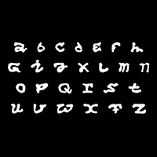[✶ Burner institute],
pour la réalisation d’une identité visuelle de
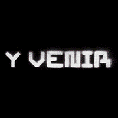[✦ La Récolte Citadine]
mais également pour un projet plus poétique comme
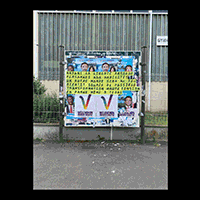[✢ Maintenance, contrôles et dérapages].
Le travail éditorial me permet de concrétiser mes idées en objets physiques qui racontent une histoire dans leur conception et leurs matériaux
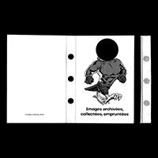[✹ Images archivées, collectées, empruntées],
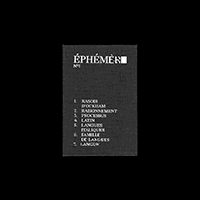[✷ Éphémère].
Je souhaite continuer à expérimenter, repousser les limites de ma créativité, en apportant une perspective unique à mes projets.
Je m'intéresse également à de nouvelles pratiques artisanales comme la sérigraphie
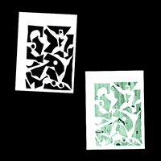[❊ Sérigraphie]
mais aussi digitale comme le développement web et le code créatif
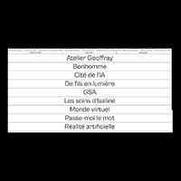[❉ Web design].
Pour toute collaboration ou si vous souhaitez seulement échanger, n'hésitez pas à me contacter !
My approach to graphic design is centred on a sensitivity to typography and editorial design. Experimentation and research are essential aspects of my creative process. I'm interested in subjectivity and the beauty found in personal
writing, the work of the hand and its imperfections. This subjectivity reflects a desire to bring an authentic and personal vision to my work.
With this in mind, I have carried out various projects where gesture plays a major role, such as
[✲ Milletype Foundry],
[✛ MF Minazuki]
and
[✶ Burner institute],
for the creation of a visual identity for
[✦ La Récolte Citadine]
but also for a more poetic project such as
[✢ Maintenance, contrôles et dérapages].
Editorial work allows me to turn my ideas into physical objects that tell a story in their design and materials
[✹ Images archivées, collectées, empruntées],
[✷ Éphémère].
I want to continue experimenting, pushing the boundaries of my creativity, bringing a unique perspective to my projects.
I'm also interested in new craft practices like screen printing
[❊ Screenprint]
but also digital like web development and creative coding
[❉ Web design].
If you're interested in collaborating with me or just want to chat, please don't hesitate to contact me!
 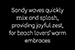
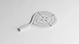
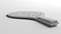
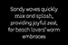
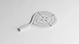
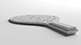
 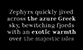
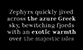
 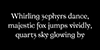
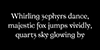


 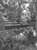
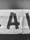
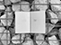
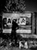
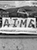
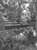
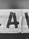
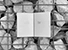
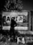
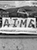
 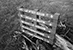
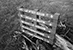

 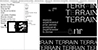
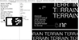